Fenómenos Cósmicos Misteriosos
- 🌟 1. Cuásares (Quásares)
- Los cuásares son los objetos más **brillantes y energéticos** del universo, alimentados por agujeros negros supermasivos en centros galácticos. El gas se calienta a temperaturas extremas, emitiendo una luz que supera galaxias enteras. Actúan como **cápsulas del tiempo cósmicas**, pues su luz nos llega de un universo primitivo muy distante. Su estudio es crucial para entender la **evolución de las galaxias** y la expansión del universo.
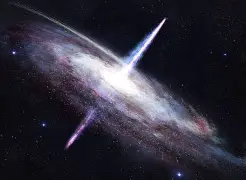
- 🌀 2. Agujeros de Gusano
- Los agujeros de gusano son **estructuras teóricas** del espacio-tiempo, propuestas por la Relatividad General de Einstein. Funcionan como **atajos o túneles** que conectan dos puntos muy distantes del universo, permitiendo potencialmente viajes interestelares o incluso temporales.
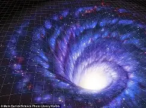
- ⚪ 3. Agujeros Blancos
- Son el **opuesto teórico** de los agujeros negros, soluciones matemáticas válidas que **expulsarían materia** e impedirían que nada entrara en su horizonte. Aunque no se ha observado ninguno, algunos científicos especulan que podrían estar relacionados con los agujeros negros. Incluso se ha propuesto que el **Big Bang** podría ser análogo a un evento de agujero blanco, una gran explosión de materia. Su existencia, sin embargo, plantea serios problemas con leyes fundamentales de la física como la Termodinámica.
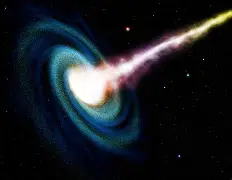
- 🧲 4. Magnetares
- Los magnetares son un tipo **raro y extremo de estrella de neutrones** que poseen campos magnéticos mil billones de veces más fuertes que el de la Tierra. Se forman a partir del colapso de estrellas masivas, y su campo colosal puede deformar átomos. Son conocidos por generar intensas **explosiones de rayos X y gamma** (llamaradas gigantes) que liberan energía masiva en segundos. Solo se han confirmado unas dos docenas en nuestra galaxia, y son clave para estudiar la materia en **condiciones extremas**.
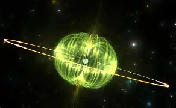
- ☄️ 5. Lluvias de Rayos Cósmicos
- Los rayos cósmicos son **partículas subatómicas de alta energía** que viajan cerca de la velocidad de la luz, originadas en supernovas u otros eventos extremos. Al impactar la atmósfera terrestre, generan una **cascada de partículas secundarias** conocida como "lluvia de aire". Estas lluvias son detectadas por instrumentos en la Tierra para estudiar las **regiones lejanas del universo**. Analizar estas partículas, algunas con energías récord, ayuda a comprender la **física en condiciones no replicables** en laboratorio.
Nota: Se necesita una ilustración de un Rayo Cósmico impactando la atmósfera terrestre y creando una lluvia de partículas.
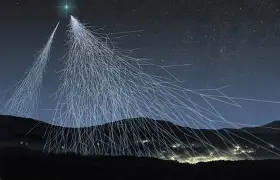
Estrellas Notables del Firmamento
- 🌟 1. Sirius (α Canis Majoris)
- Sirius es la **estrella más brillante** del cielo nocturno, conocida como la "Estrella del Perro", y se encuentra a solo 8.6 años luz de distancia. Es un **sistema binario** compuesto por la estrella blanco-azulada Sirius A y la **enana blanca** Sirius B. Sirius A es 25 veces más luminosa y 2 veces más masiva que el Sol. Su brillo la hizo importante para culturas antiguas como la egipcia, y el sistema es fundamental para entender la **evolución estelar**.
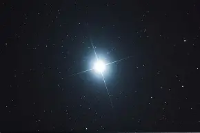
- 🔴 2. Betelgeuse (α Orionis)
- Betelgeuse es una enorme **supergigante roja** en la constelación de Orión, con un radio estimado de más de 600 veces el del Sol. Es una **estrella variable** cuyo brillo fluctúa, como se vio en su drástico oscurecimiento en 2019. Su baja temperatura superficial le da su color rojizo. Se encuentra en una fase muy avanzada de su vida y se espera que **explote como supernova** en el futuro.
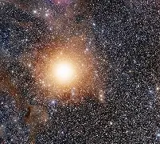
- 🔵 3. Rigel (β Orionis)
- Rigel es una **supergigante azul** y la estrella más brillante de la constelación de Orión, con una luminosidad **85,000 veces mayor** que la del Sol. Su alta temperatura (11,500 K) le da su color blanco azulado, y se encuentra a 860 años luz. Es un **sistema estelar múltiple** con al menos cuatro componentes. Dada su gran masa, también se espera que termine su ciclo de vida como una **supernova**.
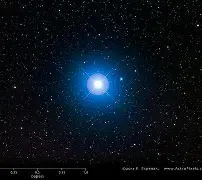
- ✨ 4. Vega (α Lyrae)
- Vega es la estrella más brillante de Lyra y una de las más cercanas, a solo **25 años luz** de la Tierra. Es una estrella blanco-azulada y una de las primeras en ser fotografiada y tener su espectro registrado. Es una de las tres estrellas que forman el conocido **Triángulo de Verano**. Se ha detectado un **disco de polvo** a su alrededor, sugiriendo la potencial formación de planetas.
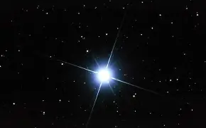
- 🔥 5. Antares (α Scorpii)
- Antares, el "corazón del escorpión", es una **supergigante roja** inmensa, con un radio de aproximadamente 680 veces el del Sol. Su baja temperatura (3,600 K) le da un color rojo intenso. Es una **estrella binaria** acompañada por una estrella azul-blanca más pequeña. Si se ubicara en nuestro sistema, se extendería más allá de la órbita de Marte.
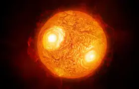
- 🟠 6. Aldebarán (α Tauri)
- Aldebarán es la **estrella más brillante de Tauro** y una **gigante naranja** con una luminosidad 425 veces superior a la solar. Su nombre significa "el seguidor" de las Pléyades. Está a 65 años luz y su radio es 44 veces el del Sol. Es una **estrella evolucionada** que ya agotó el hidrógeno en su núcleo, siendo clave para estudios de evolución estelar.
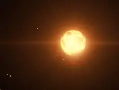
- 🌕 7. Canopus (α Carinae)
- Canopus es la **segunda estrella más brillante** del cielo nocturno y una **gigante brillante blanco-amarillenta** a 309 años luz. Su luminosidad es asombrosa, superando **13,000 veces la del Sol**. Ha sido utilizada por la NASA como **referencia de navegación** para sondas espaciales debido a su brillo estable. Es una estrella crucial para la navegación en el hemisferio sur.
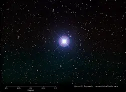
- 🧡 8. Arcturus (α Boötis)
- Arcturus es la **cuarta estrella más brillante** del cielo y una **gigante roja** de tono anaranjado, relativamente cercana a 36.7 años luz. Ha agotado su hidrógeno y se encuentra en una etapa avanzada, siendo 215 veces más luminosa que el Sol. Su **rápido movimiento propio** indica que pertenece a una población estelar más antigua.
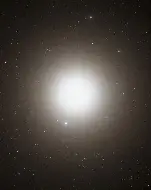
- 🌟 9. Procyon (α Canis Minoris)
- Procyon es la estrella más brillante de Canis Minor y una de las más cercanas, a solo **11.4 años luz**. Es un **sistema binario** compuesto por Procyon A (blanco-amarilla) y Procyon B (**enana blanca**). Su nombre significa "antes del perro" por preceder a Sirius, y forma parte del **Triángulo de Invierno**.
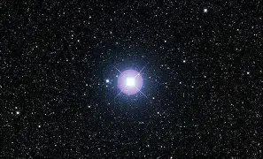
- 🔵 10. Deneb (α Cygni)
- Deneb es la **supergigante blanca-azulada** más brillante de la constelación del Cisne (Cygnus). Es una de las más luminosas conocidas, brillando con la fuerza de **más de 180,000 soles** a pesar de su gran distancia (unos 1,600 años luz). Es una estrella joven y masiva, que también forma parte del **Triángulo de Verano**.
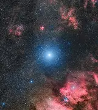